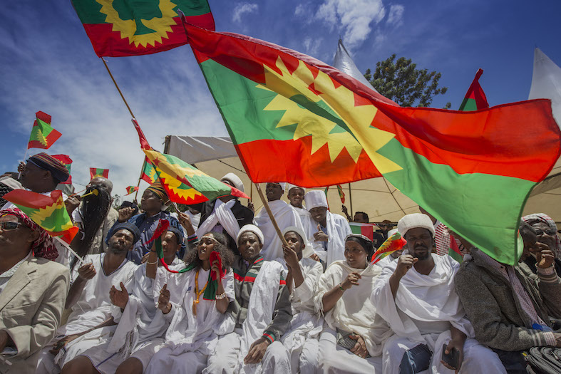
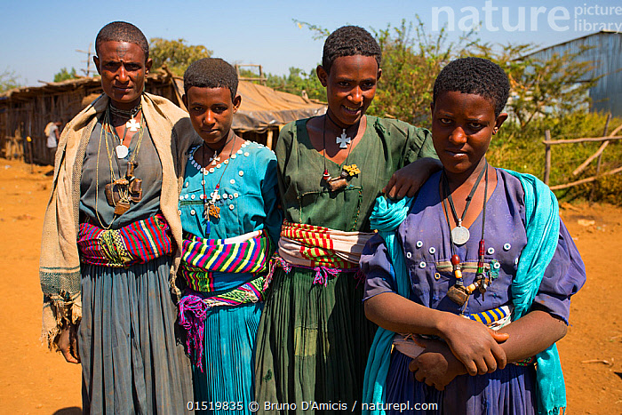
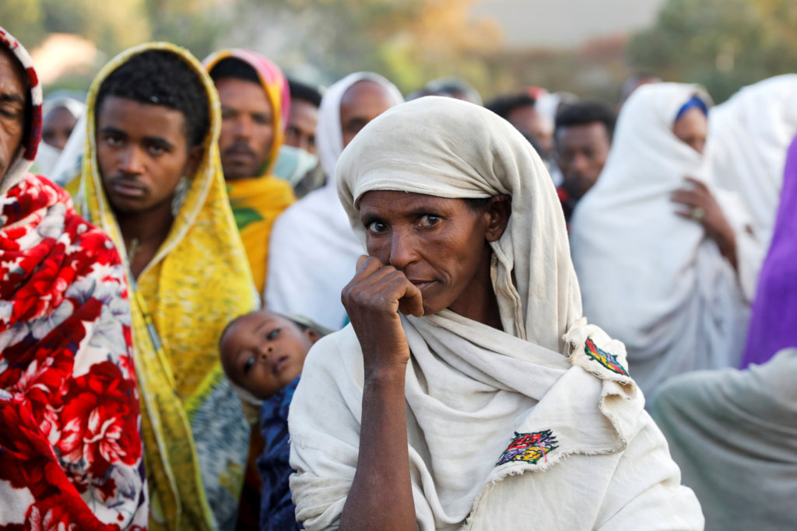
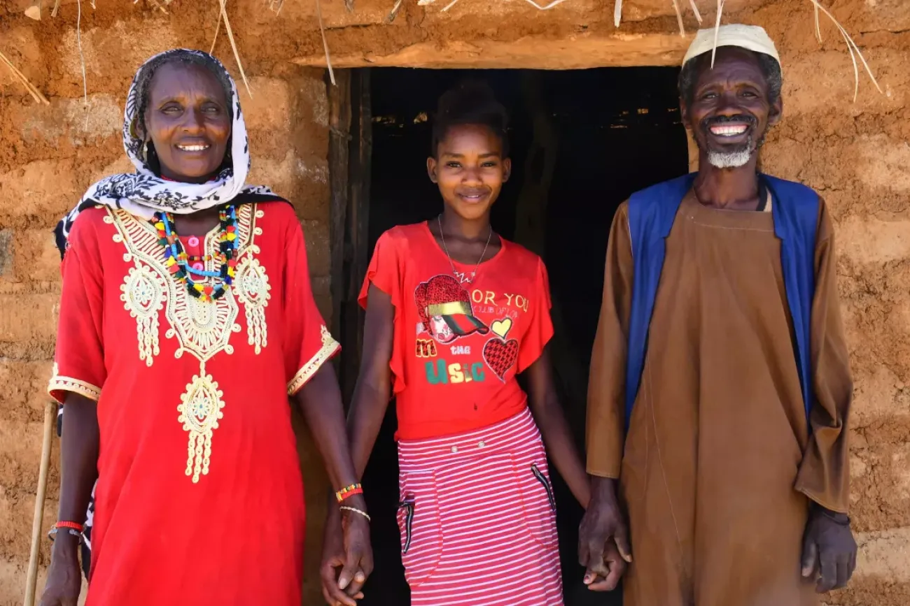
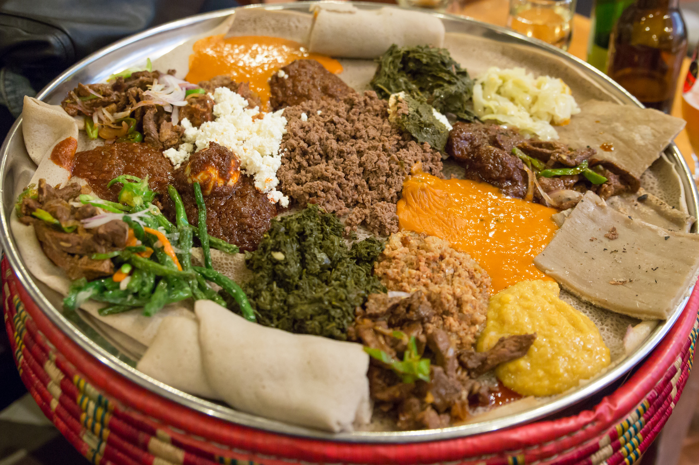
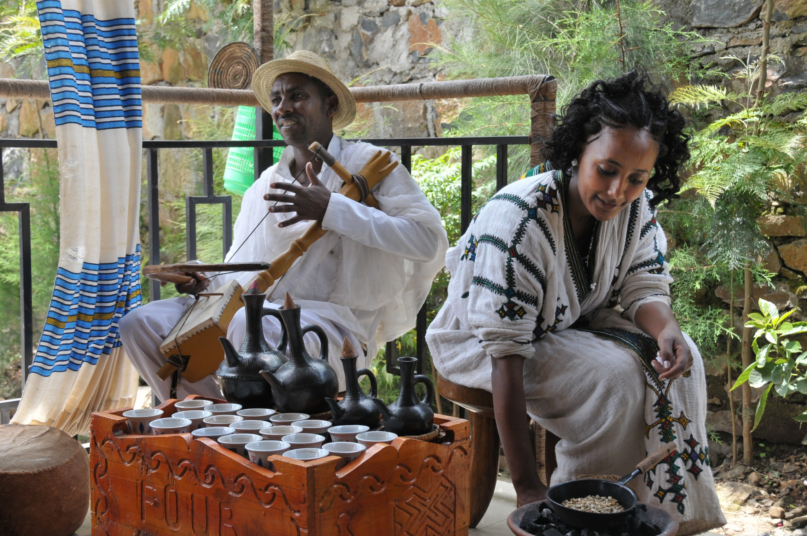
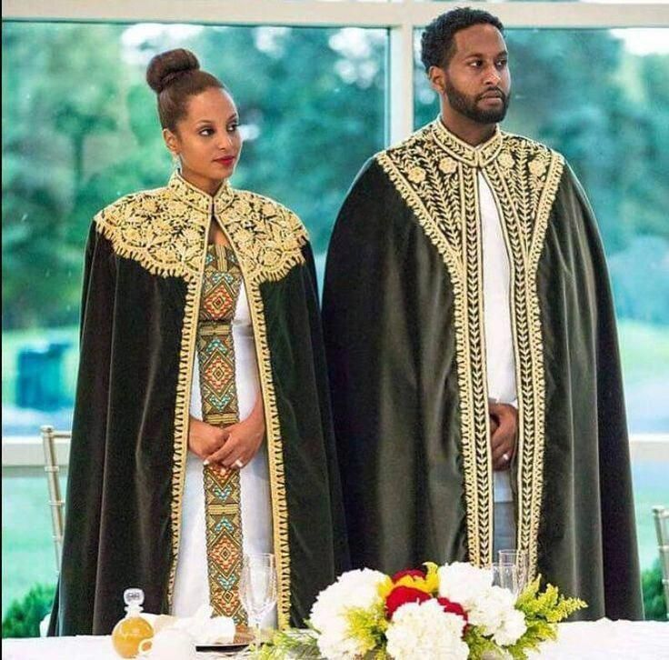
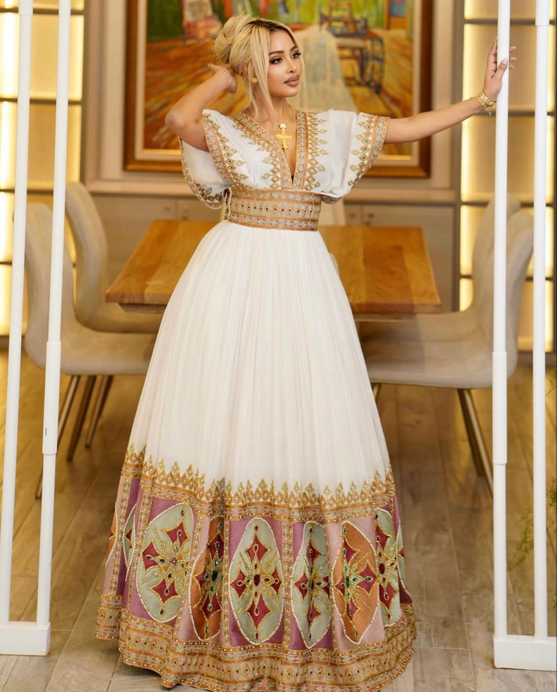

Découvrez la richesse culturelle de l'Éthiopie dans tous ses domaines : cuisine, religions, fêtes et traditions uniques.
Commencer l'explorationL'Éthiopie abrite plus de 80 groupes ethniques, chacun avec ses propres langues, traditions, tenues, danses et coutumes. En voici les principaux.

Principalement agriculteurs et éleveurs. Pratiquent le système Gada de gouvernance démocratique.

Historiquement influent, langue officielle. Forte tradition chrétienne orthodoxe et littéraire.

Héritiers du royaume d'Aksoum. Tradition agricole montagneuse et architecture unique.

Nomades pastoraux, tradition islamique forte. Poésie orale développée (gabay).
Note : D'autres groupes importants incluent les Afar, Gurage, Sidama, Wolayta, et bien d'autres, chacun contribuant à la mosaïque culturelle éthiopienne.
Coexistence religieuse unique - Une des premières terres d'accueil des trois religions abrahamiques
Note historique : L'Éthiopie est un rare exemple de coexistence pacifique séculaire entre chrétiens, musulmans et juifs, avec une tradition d'hospitalité (እንከን - ənkän) inscrite dans la culture nationale.

Galette fermentée à base de teff, servie comme assiette et couvert. Base de tous les repas.
Ragoût épicé au berbere, servi avec injera. Existe en version viande (doro wat) ou légumes.

Rituel social important : torréfaction, mouture et dégustation collective pendant 2-3 heures.
Un héritage textile riche et coloré, reflétant l'identité et le statut social

